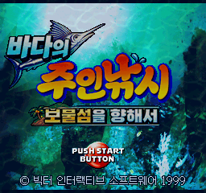

바다의 주인 낚시 - 보물섬을 향해서
Umi no Nushi-tsuri - Takarajima ni Mukatte
작은 마을에 사는 열두 살 소년이 전설의 물고기를 낚기 위해 여행을 떠납니다. 아기자기한 2D 그래픽으로 그려진 바닷가를 돌아다니며 낚시와 모험을 즐기는 RPG입니다. 처음에는 소년으로 시작하며, 게임을 진행하면 다른 두 인물로도 플레이할 수 있습니다.
대사·메뉴·도구 설명 등 1,886행과 타이틀, 물고기 이름표를 한글화했습니다. 한글 이름 조합 입력과 받침에 따른 자동 조사를 지원하고, 낚시 노트와 가족 전언판, 엔딩 글자와 영상 속 생선가게 간판을 한글로 바꿨습니다.
미수정 일본판 SLPS-02172 BIN에 적용하는 v0.7 검수판입니다. 원본 해시와 적용 방법은 ZIP 안의 readme.txt에 있습니다.
